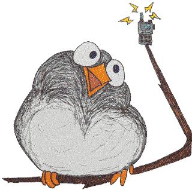

D.B.A.R.F.
Distributed Bay Area Radio Fellowship
The Distributed Bay Area Radio Fellowship is a network of Allstar nodes maintained by a group of friends living in the San Francisco Bay Area and beyond.
Network Status
Members
| Name | Callsign | Location | Allstar | Echolink? |
|---|---|---|---|---|
| Brandon | KN6DPX | El Cerrito, CA | 52333 | ❌ |
| Chris | KN6JFJ | Washington, DC | 51987 | ❌ |
| Drew | KN6DQH | Pacifica, CA | 52111 | ❌ |
| Erica | KC3YMO | Washington, DC | 51987 | ❌ |
| Ivana | KN6JTG | El Cerrito, CA | 52333 | ❌ |
| Jenn | KN6JJG | Pacifica, CA | 52111 | ❌ |
| Joey | KN6BDW | Athens, GA | 51879 | ✅ |
| John | KN6DPT | Burlington, VT | 51865 | ✅ |
| Katie | KN6JVB | Athens, GA | 51879 | ❌ |
How to Connect
If you're within local range of a member node, you can transmit to the node with the following settings:
| Frequency | Tx CTCSS | Rx CTCSS |
|---|---|---|
| 433.5 MHz | 107.2 MHz | 107.2 MHz |
If you're not in local range, you can connect to a node using Allstar. Some of our nodes also support Echolink connections.
All transmissions to a member node are repeated on other member nodes that are connected to the network.
Weekly Radio Net
The DBARF network hosts a weekly radio net every Friday at 17:30 PST / 20:30 EST / 01:30 UTC.
All amateur radio operators are welcome to participate.
Anyone can volunteer for the role of net control. To help volunteers, we have prepared a script for net control.